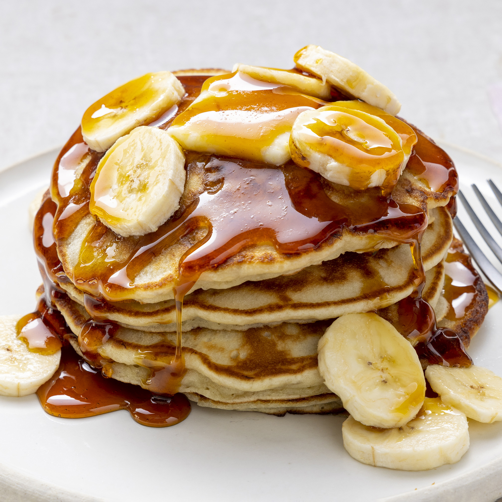

Banana Pancakes

Description
Crowd-pleasing banana pancakes made from scratch that are ready in minutes. A fun twist on ordinary pancakes.
Ingredients
- Flour
- Sugar
- Baking Powder
- Salt
- An Egg
- Milk
- Bananas
Steps
-
Mix
- Combine your dry ingredients (flour, sugar, salt, baking powder) in one bowl and your wet ingredients (egg, milk, vegetable oil, mashed bananas) in another bowl. Add the dry ingredients to the bowl with the wet ingredients, then stir until they're incorporated. It's OK if your batter is slightly lumpy.
-
Cook
- Pour the batter in ¼ cup portions onto a lightly oiled pan or griddle over medium-high heat. Cook for a few minutes, flip with a spatula, and cook for another few minutes (or until each side is golden brown).
-
Serve
- Serve your banana pancakes immediately. They're delicious alone or with your favorite pancake toppings.